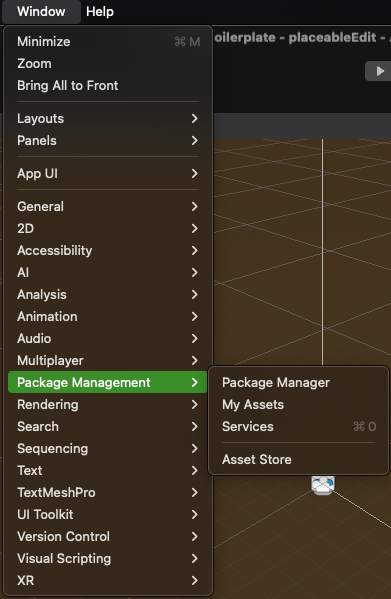
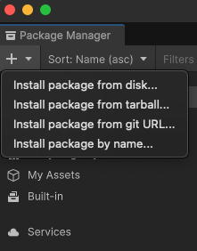
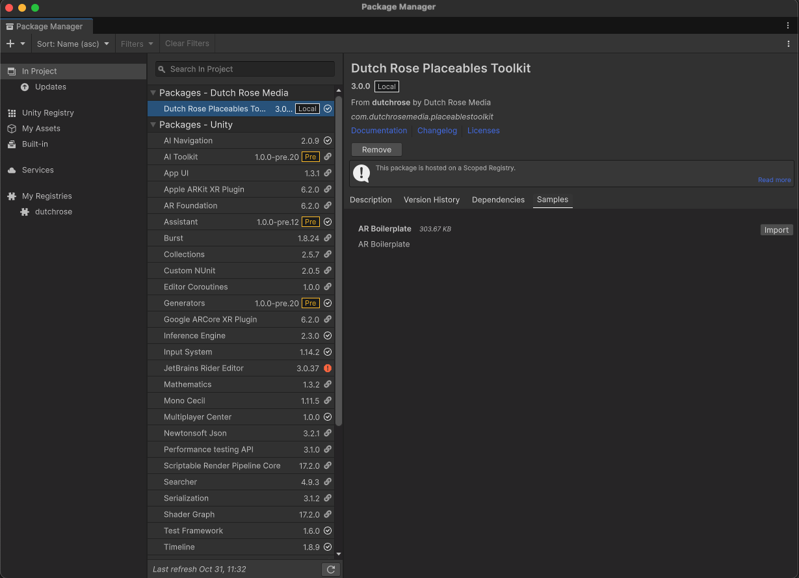
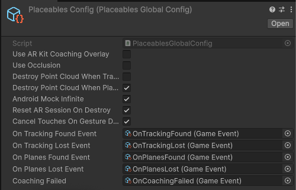
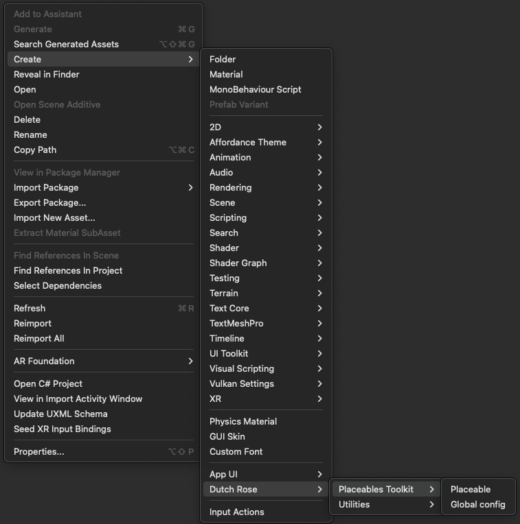
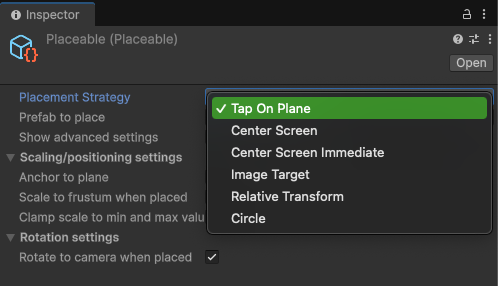
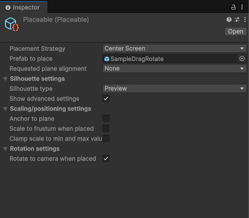
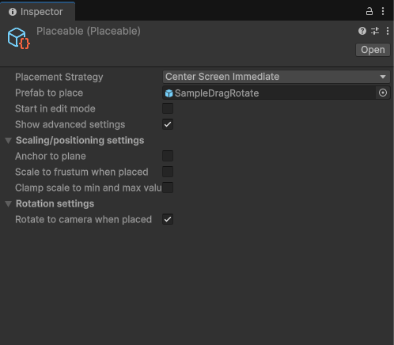
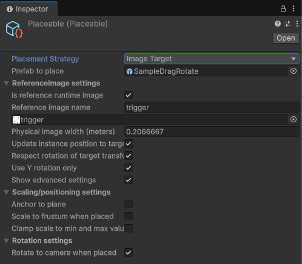
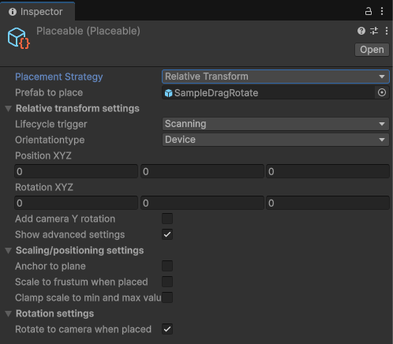

Dutch Rose Placeables Toolkit
Introduction
This toolkit is a helper library you can use in order to use AR functionalities in your project free of hustle.
Installation
You can use the unity package manager to install the library:
-
Open package manager from Window -> Package Management -> Package Manager 
-
Choose the Plus Icon -> Install package from git URL... 
-
Copy the
TODO: git urland hit install. -
In order to import the Sample project import it from the Package Manager 
Core Components Breakdown
classDiagram
ARLifeCycleManager <-- AbstractPlaceablesManager:Interfaces with
ARLifeCycleManager <-- LifecycleUIResponder:Subscribes to
ARLifeCycleManager <-- PlaceablesGlobalConfig:Defines configuration for
AbstractPlaceablesManager <-- ARPlaceablesManager:Implements
AbstractPlaceablesManager <-- Placeable:Registers to
ARImageTargerManager <-- AbstractPlaceablesManager:Leverages
class LifecycleUIResponder{
Event based triggers for an AR Lifecycle
}
class ARLifeCycleManager{
Point of entry for an AR scene
Initiates connection
with underlying
AR SDK Parses a
PlaceablesGlobalConfig object.
}
class PlaceablesGlobalConfig{
ScriptableObject
allowing developers to
configure an AR session
in a flow-chart like manner
from the inspector
}
class ARPlaceablesManager{
ARFoudation specific
impl. of a
placeables manager
}
class AbstractPlaceablesManager{
Abstract interface
allowing `placeables`
to register themselves
for placement
}
class ARImageTargerManager{
MonoBehaviour
managing lifecycle of
an underlying
ARImageTracking component
}
class Placeable{
Scriptable object
defining placement
behaviour for AR objects
}PlaceablesGlobalConfig

-
Use ARKit Coaching Overlay: shows the iOS only Coaching Overlay when enabled, its functionality is detailed by Apple on this url
-
Use Occlusion: enables depth mask/occlusion techniques, this works better on more modern phones as it can use lidar/depth sensors.
-
DestroyPointCloudWhenTracking: tells the
lifecyclemanagerto destroy thepoint cloudwhen tracking is first found. -
DestroyPointCloudWhenPlanesFound: tells the
lifecyclemanagerto destroy thepoint cloudwhen planes are first found. -
AndroidMockInfinite: mocks the non-existent
infinite planeon android systems. -
ResetARSessionOnDestroy: destroy an AR session when the containing scene is unloaded.
-
CancelTouchesOnGestureDetection: used when ‘pinching’ is enabled, prevents a touch on the screen from triggering multiple gestures at the same time.
-
On*Event: a number a
GameEventsallowing developers to respond to AR lifecycle events using theSOArchitecture/Events/GameEvent.csGame Event system without having to write code.
More about GameEvents
GameEvents is simply a concept to handle events in your application cleaner.
It's a simple ScriptableObject with a listener alongside that can be invoked based on the events you want. OnTrackingFound and the rest of On* events are some use-cases of this pattern.
More info
Every AR scene always contains exactly one ARLifeCycleManager which initializes the AR foundation library when the scene loads.
Placeables

To simplify development in a codeless manner, the Placeables package lets developers define AR functionalities in a configurable manner from the inspector using Placeable ScriptableObjects.
A placeable is an asset on the filesystem that can be supplied to an implementation of the AbstractPlaceableManager class.
Placeables placement strategies

- TapOnPlane: Physically mark the place to instantiate an object by tapping.

- CenterScreen: Drag an object around on the center of the screen, to then confirm placement by tapping.

-
CenterScreenImmediate: Instantiates an object using a raycast from the center of the screen. It does not ask the user to confirm and places immediately.
-
PrefabToPlace: which prefab will be used to be placed
-
StartInEditMode: makes sure the gestureliner starts in an
Unlockedstate -
AnchorToPlane: leverages a concept called
ARAnchorsto make sure an object is physically anchored to a given place on a plane -
ScaleToFrustumWhenPlaced: scales the object to fit within the camera view when placed
-
ClampScaleToMinAndMax: allows the developer to define a min and max scale
-
RotateToCameraWhenPlaced: rotates the object to face the camera upon placement
-
ImageTarget: A PNG that will be used for imagetracking. The prefab is then placed when the ImageTargetManager finds said image in the camera view.
-

- ImageTarget: A PNG that will be used for imagetracking. The prefab is then placed when the ImageTargetManager finds said image in the camera view.

- RelativeTransform: Place an object at a given distance and rotation from the user (currently used by ByAR)

Gesture Manager
There is a GestureListener MonoBehaviour which lets objects placed in AR easily respond to events thrown by the GestureManager class in a codeless manner. It is automatically attached to an instantiated prefab by the PlaceablesManager.
classDiagram
ARGestureManager <-- AbstractGestureListener:Registers to
AbstractGestureListener <-- ARGestureListener:Implements
class ARGestureListener{
ARFoundation specific
impl. of gestures listener
}
class AbstractGestureListener{
Abstract component letting
objects placed in AR receive
event-based manipulation
notifications.
}
class ARGestureManager{
Global component handling user input.
Allows easy object manipulation interactions.
}Supported Gestures
- Lock by Tap
- Unlock by long press
- Pinch in and out for scaling
- Drag the object to move
- Rotate
Dependencies
- AR Foundation
- Google ARCore XR Plugin
- Apple ARKit XR Plugin
- XR Plugin Management
- Editor Coroutines
- XR Interaction Toolkit